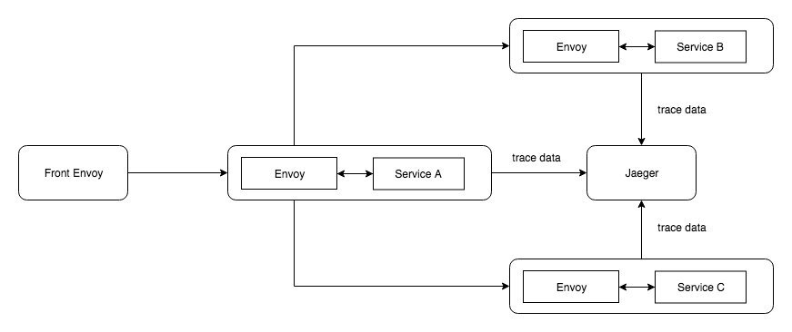
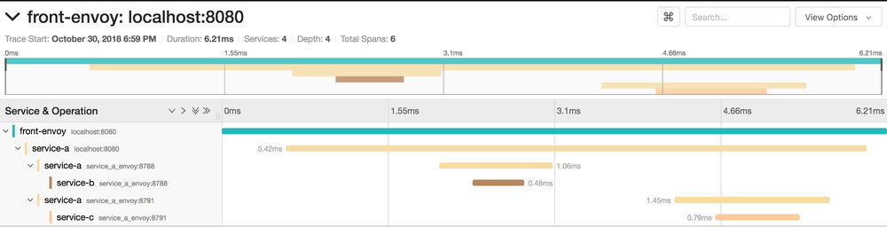

如果你是初次接触服务网格和Envoy，我这里有一篇文章可以帮助你入门。
在微服务架构中，可观测性变得越加重要。我认为这是选择微服务这条路的必要条件之一。我的一位前同事列出了一份非常棒的需求清单，如果你想做微服务，那么你需要满足提到的这些要求。
可观测性有许多事要做：
- 监控
- 报警
- 日志集中化
- 分布式追踪
本文只讨论Envoy下的分布式追踪，我尽量给出一个全貌来描述分布式追踪、OpenTracing、Envoy和Jaeger是如何整合在一起工作的。在下一篇文章中，我们将讨论使用Envoy、prometheus和grafana做监控。
分布式追踪
随着大量的服务和请求的流转，你需要能够快速发现哪里出了问题。分布式追踪最早由谷歌的Dapper普及开来，它本质上具有在微服务的整个生命周期中追踪请求的能力。
最简单的实现方法是在前端代理生成一个唯一的请求id（x-request-id），并将该请求id传递给与其交互的所有服务。基本上可以向所有的日志追加这一请求id。因此，如果你在kibana这样的系统中搜索唯一id，你会看到针对该特定请求的所有相关的日志。
这非常有用，但是它不能告诉你每个服务中请求完成的顺序、是否是并行完成的或者花费了多少时间。
让我们看看OpenTracing和Envoy如何帮助我们解决这一问题。
OpenTracing
与其只传递一个id（x-request-id），不如传递更多的数据，比如哪个服务位于请求的根级别，哪个服务是哪个服务的子服务等等。这可以帮我们找出所有的答案。标准的做法是使用OpenTracing，它是分布式追踪的规范，和语言无关。你可以在这里阅读更多关于此规范的信息。
Envoy
服务网格就像微服务的通信层，服务之间的所有通信都是通过网格进行的。它可以实现负载均衡、服务发现、流量转移、速率限制、指标（metrics）收集等功能，Envoy就是这样的一个服务网格。在我们的例子中，Envoy将帮助我们生成唯一根请求id （x-request-id），生成子请求id，并将它们发送到Jaeger或Zipkin这样的追踪系统，这些系统存储、聚合追踪数据并为其提供可视化的能力。
这篇文章中我们会使用Jaeger作为追踪系统，Envoy用来生成基于zipkin或lighstep格式的追踪数据。我们会使用zipkin的标准来兼容Jaeger。
只要给我看代码就好
下面的图展示了我们尝试构建的系统全貌：

服务安装
我们将使用docker-compose来部署Envoy。你需要向Envoy提供一份配置文件。这里我不打算解释如何配置Envoy，只集中讨论与追踪相关的部分。。你可以在这里找到更多关于配置Envoy的信息。
前端Envoy
前端Envoy的作用是生成根请求id，你可以通过配置去实现。下面是它的配置文件：
---
tracing:
http:
name: envoy.zipkin
config:
collector_cluster: jaeger
collector_endpoint: "/api/v1/spans"
admin:
access_log_path: "/tmp/admin_access.log"
address:
socket_address:
address: "127.0.0.1"
port_value: 9901
static_resources:
listeners:
-
name: "http_listener"
address:
socket_address:
address: "0.0.0.0"
port_value: 80
filter_chains:
filters:
-
name: "envoy.http_connection_manager"
config:
tracing:
operation_name: egress
use_remote_address: true
add_user_agent: true
access_log:
- name: envoy.file_access_log
config:
path: /dev/stdout
format: "[ACCESS_LOG][%START_TIME%] \"%REQ(:METHOD)% %REQ(X-ENVOY-ORIGINAL-PATH?:PATH)% %PROTOCOL%\" %RESPONSE_CODE% %RESPONSE_FLAGS% %BYTES_RECEIVED% %BYTES_SENT% %DURATION% %RESP(X-ENVOY-UPSTREAM-SERVICE-TIME)% \"%REQ(X-FORWARDED-FOR)%\" \"%REQ(USER-AGENT)%\" \"%REQ(X-REQUEST-ID)%\" \"%REQ(:AUTHORITY)%\" \"%UPSTREAM_HOST%\" \"%DOWNSTREAM_REMOTE_ADDRESS_WITHOUT_PORT%\"\n"
stat_prefix: "ingress_443"
codec_type: "AUTO"
generate_request_id: true
route_config:
name: "local_route"
virtual_hosts:
-
name: "http-route"
domains:
- "*"
routes:
-
match:
prefix: "/"
route:
cluster: "service_a"
http_filters:
-
name: "envoy.router"
clusters:
-
name: "service_a"
connect_timeout: "0.25s"
type: "strict_dns"
lb_policy: "ROUND_ROBIN"
hosts:
-
socket_address:
address: "service_a_envoy"
port_value: 8786
- name: jaeger
connect_timeout: 0.25s
type: strict_dns
lb_policy: round_robin
hosts:
- socket_address:
address: jaeger
port_value: 9411
第1-8行启用追踪并配置追踪系统和它所在的位置。
第27-28行指定流量进出的位置。
第38行指出Envoy必须生成根请求id。
第66-73行配置Jaeger追踪系统。
所有Envoy的配置中（前端，服务a，b和c）都需要启用追踪和配置Jaeger地址
Service A
在我们的例子中服务A将调用服务B和服务C。关于分布式追踪非常重要的一点是，尽管Envoy支持进行分布式追踪，但也依赖于服务把生成的Header传递给流出的请求。因此，服务A将在调用服务B和C时转发请求头。服务A是一个只有一个端点（endpoint）的简单的go服务，内部调用服务B和服务C。下面是我们需要传递的头信息：
req, err := http.NewRequest("GET", "http://service_a_envoy:8788/", nil)
if err != nil {
fmt.Printf("%s", err)
}
req.Header.Add("x-request-id", r.Header.Get("x-request-id"))
req.Header.Add("x-b3-traceid", r.Header.Get("x-b3-traceid"))
req.Header.Add("x-b3-spanid", r.Header.Get("x-b3-spanid"))
req.Header.Add("x-b3-parentspanid", r.Header.Get("x-b3-parentspanid"))
req.Header.Add("x-b3-sampled", r.Header.Get("x-b3-sampled"))
req.Header.Add("x-b3-flags", r.Header.Get("x-b3-flags"))
req.Header.Add("x-ot-span-context", r.Header.Get("x-ot-span-context"))
client := &http.Client{}
resp, err := client.Do(req)
您可能惊讶为什么调用服务B时URL是service_a_envoy。如果你还记得我们已经讨论过服务之间的所有通信都需要通过envoy代理的话，类似的，可以在调用服务C时传递Header。
服务B和服务C
剩下的两个服务不需要对代码进行任何更改，因为它们处于叶子级别。一旦这两个服务要调用其他端点，则必须转发请求追踪头，除此之外不需要对Envoy进行任何特殊配置。服务B和C代码如下：
package main
import (
"fmt"
"log"
"net/http"
)
func handler(w http.ResponseWriter, r *http.Request) {
fmt.Fprintf(w, "Hello from service B")
}
func main() {
http.HandleFunc("/", handler)
log.Fatal(http.ListenAndServe(":8082", nil))
}
package main
import (
"fmt"
"log"
"net/http"
)
func handler(w http.ResponseWriter, r *http.Request) {
fmt.Fprintf(w, "Hello from service C")
}
func main() {
http.HandleFunc("/", handler)
log.Fatal(http.ListenAndServe(":8083", nil))
}
所有这些完成后，如果您运行docker-compose up并访问前端Envoy端点，就会生成追踪信息并推送到Jaeger。Jaeger有一个非常友好的UI界面来展示追踪信息，我们的信息看上去像这样：

正如你看到的，它提供了总体的时间损耗，系统各部分是时间损耗，哪个服务调用哪个服务，服务和服务的关系（服务b和服务c是兄弟关系）。Jaeger的进一步使用留待你自己去探索。
你可以在这里找到所有的Envoy配置、代码和Docker compose文件。
就是这些，谢谢，让我知道你的反馈。
如果你在寻找Envoy的xDS服务端的话，我的同事已经搭建了一个。可以直接获取（check out）。
这里 是这一系列文章中的下一篇（使用Envoy，Prometheus和Grafana进行监控）。